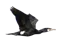

Animal Grimoire

CormorantsThe cormorant is a large, dark seabird with an ancient presence in the folklore of many coastal cultures. Known for its striking posture and exceptional diving ability, it moves fluidly between the worlds of air and water, and carries associations with abundance, transition, ancestral connection, and full commitment to one's course of action.
Physical Description
A medium-to-large seabird, the cormorant weighs between 3 and 5 pounds, measures approximately 30 inches in length, and spans roughly 47 inches from wingtip to wingtip. Its plumage is predominantly dark, though most species have white or distinctively colored patches on the sides of the head. The bill is blunt and hooked, the feet fully webbed. Cormorants are frequently seen standing with wings partially outstretched, a posture used to dry their feathers after diving. They build bulky nests from discarded plant material and found objects, and chicks raised in colonies form their own social groups as soon as they are mobile, returning to the nest only for feeding.
Habitat and Distribution
Cormorants are primarily coastal birds associated with saltwater environments, though they are also found inland near freshwater lakes and rivers. The double-crested cormorant is the most widespread North American species, ranging from southern Canada through the southern United States.
Mythology and Folklore
The name cormorant derives from the Latin phrase meaning "raven of the sea," a reference to the bird's dark, inky plumage.
In China and Japan, cormorants were historically trained as fishing partners. A loose collar prevented the bird from swallowing fish above a certain size, requiring the fisherman to retrieve larger catches. A cormorant image or talisman was considered a charm of luck and abundance for fishermen and their vessels.
In heraldic tradition, the cormorant's wings-outstretched pose was seen as an echo of the cruciform shape, linking the bird to sacrifice and nobility. John Milton inverted this symbolism in Paradise Lost, casting the cormorant as one of Satan's disguises and associating it instead with greed and excess.
In parts of Scandinavia, the cormorant is a welcome omen. Norwegian tradition holds that the spirits of those lost at sea return to visit loved ones in cormorant form, and seeing three cormorants flying together is understood as a message from a deceased relative. In Ireland, a cormorant landing on a church steeple is read as an ill omen.
Omens and Divinatory Meaning
The cormorant's feathers are not waterproofed with oil, so before diving it deliberately soaks them to reduce buoyancy. This deliberate preparation before a full plunge is the bird's central divinatory message: plan ahead, prepare thoroughly, and then commit without reservation. Transitioning between two very different states or circumstances is possible, but only when you approach each one with full presence and intention.
The cormorant's diving also speaks to immersion itself. When the time comes to act, act completely. Half-measures and cautious wading are not the cormorant's way.
Colors
Black, white